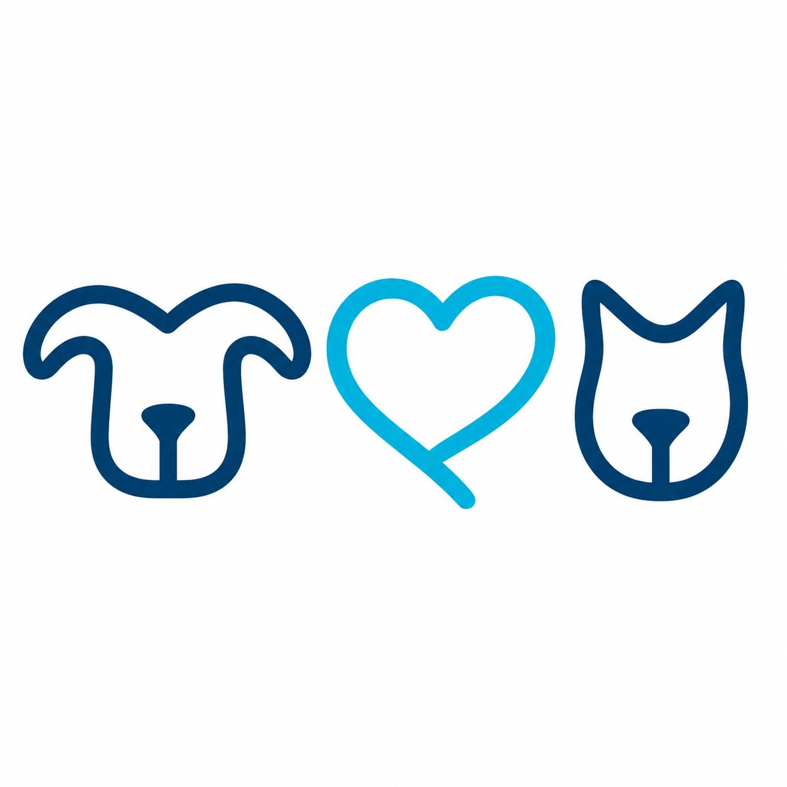

Every location and department has a distinct function. Together, they create one connected experience for Members and Pets.
Estimated time35–45 minIncludes an interactive organization chart, team scenarios, a final assessment, and facilitator sign-off.
Lesson objectives
By the end of this lesson, you will be able to:
Identify Hannah's primary locations and the functions performed at each.
Explain the roles of Medical, Member Service, Membership, Operations, and the Hannah Support Team.
Describe how departments work together as One Hannah.
Use the leadership organization chart to identify the correct path for questions, decisions, and escalation.
Apply chain-of-command principles in common workplace scenarios.
Module 1
Hannah Locations and Functions
One Hannah Principle
A Member should experience one connected Hannah organization — regardless of which location or team serves them.
One Organization, Multiple Points of Service
Hannah's locations and support functions are designed to work together. A Pet's care may begin with a phone call, continue at one hospital, require support from another team, and conclude with follow-up from a different department.
The Member should never have to coordinate Hannah for us.
Our responsibility is to communicate, document, transfer information, and complete handoffs so that the experience feels connected.
Primary Hannah Locations
HE1
Portland
Provides hospital-based medical care, Member service, PetNursing, training support, and local operational leadership.
HE2
Tigard
Provides hospital-based medical care, Member service, PetNursing, and emergency support, including 24/7 emergency operations.
Remote Support
Hannah Helpline
Supports Members by phone, helps identify urgency, routes questions appropriately, and connects Members with the correct Hannah resource.
Organization-Wide
Hannah Support Team (HTS)
Provides centralized support functions that help hospitals, teams, Members, and organizational systems operate effectively.
Different Functions, Shared Purpose
Locations may have different staffing, schedules, and operational responsibilities. Those differences do not create separate organizations.
Member contacts Hannah→Need is identified→Correct team responds→Handoff is documented→Follow-up is completed
The correct destination is determined by the Member's or Pet's need — not by convenience, habit, or which team first received the request.
Knowledge check
A Member calls the Helpline about a Pet with rapidly worsening breathing.
Module 2
Teams and Departments
One Hannah Principle
Every team owns part of the experience. No team owns the experience alone.
Medical
Purpose
Provide safe, compassionate, evidence-informed medical care and guide decisions about a Pet's health.
Core functions
Examinations, diagnostics, treatment, surgery, hospitalization, and emergency care
Clinical recommendations and medical decision making
PetNursing care, monitoring, treatment execution, and clinical documentation
Medical follow-up and escalation
Refer here when: the question requires clinical judgment, interpretation, diagnosis, treatment direction, or assessment of urgency.
Member Service
Purpose
Create an organized, informed, compassionate experience before, during, and after each interaction.
Core functions
Calls, scheduling, arrival, check-in, routing, and discharge support
Setting expectations and coordinating handoffs
Connecting Members with the correct team
Documenting communication and follow-up needs
Refer here when: the need involves appointment coordination, hospital navigation, service recovery routing, or a nonclinical Member experience question.
Membership
Purpose
Help prospective and current Members understand Hannah Membership and support accurate enrollment and plan-related communication.
Core functions
Membership education and enrollment
Explaining what the Hannah model includes
Maintaining accurate Member and Pet enrollment information
Supporting questions that require Membership expertise
Refer here when: the question involves joining Hannah, membership structure, enrollment, or a plan explanation that falls outside the team member's verified knowledge.
Operations
Purpose
Build and maintain the systems, workflows, resources, and controls that allow teams to deliver reliable care and service.
Core functions
Hospital operations and workflow coordination
Staffing, scheduling, inventory, facilities, quality, and process execution
Policy implementation and operational accountability
Cross-department problem solving
Refer here when: the issue involves workflow, staffing, facilities, inventory, process ownership, or an operational barrier affecting care or service.
Hannah Support Team (HTS)
Purpose
Provide centralized expertise and infrastructure that support the entire organization.
Functions represented in the leadership structure
Finance and accounting
Team Resources and payroll
Information Technology and programming
Membership support and Member Advocate functions
Marketing, social media, facilities, and Pet Limo support
Important: HTS is not separate from hospital teams. It is part of One Hannah and exists to help the organization function consistently.
Who Owns the Next Step?
Good teamwork is not simply transferring a question. It means ensuring that the receiving team has the information needed to act.
Warm handoff
Share the Member's name, Pet, concern, urgency, and what has already occurred.
Document
Record the communication and any promised follow-up in the approved system.
Confirm ownership
Know which person or team is responsible for the next action.
Close the loop
Verify completion when the issue affects care, safety, or Member confidence.
Interactive scenario
A Member asks a Service Coordinator to interpret abnormal laboratory results. Choose the best response.
Module 3
Leadership Organization Chart
Why it matters
The organization chart shows accountability, support, and escalation — not status or importance.
Current as of July 2026.
Executive and Hannah Support Team (HTS) Leadership
Organization-wide leadership and centralized support functions.
Scott Campbell, DVMBoard of Directors Chairman
Francesca FerrucciGeneral Manager
Dotted-line
Nathan BresselVP of Finance
Joshua Horner, DVMChief Medical Officer
DVMs / Pet PractitionersMedical care and clinical decision support
Dominek FerrucciDirector of Memberships
MembershipsEnrollments & Retention
Member Advocate TeamMember Concerns, Plan Changes & Billing
Solid line — direct reporting relationshipDotted line — coordination / indirect relationship
Hospital and Team Leadership
Practice-level leadership at each Hannah location.
HE1 · Portland
Hannah MorrisonPractice Manager
Heather DraperManager of PetNursing
HE1 PetNursing TeamClinical nursing support
Hannah HelplinePhone support and routing
Misa MoraService Manager
Service CoordinatorsMember service support
HE1 TrainingLead Trainer
HE2 · Tigard
Kala PavlackyMedical Operations Manager
Kendra LeeManager of PetNursing
HE2 PetNursing TeamClinical nursing support
ER Nursing TeamEmergency nursing support
Christina LunskiService Manager
Service CoordinatorsMember service support
HE2 TrainingTrainer
NoteKala Pavlacky and Christina Lunski lead HE2 as peers, each reporting through their respective functional leadership.
Using the Chain of Command
Begin with the leader closest to the work whenever practical. Escalate when the issue cannot be resolved, presents immediate risk, involves the leader directly, or requires authority beyond that role.
Team Member→Direct Manager→Department or Hospital Leader→Executive Leadership
Safety exception: Immediate patient, Member, workplace, legal, or ethical risk should be escalated promptly through the most appropriate available channel.
Knowledge check
An HE1 PetNurse needs coaching and clarification about nursing workflow.
Module 4
Working as One Hannah
Shared standard
We do not send Members from team to team without ownership. We guide them to the right next step.
What One Hannah Looks Like
We speak as one organization. Avoid language that creates "us versus them" between locations or departments.
We share relevant information. The next team should not have to restart the conversation.
We respect role boundaries. We explain what we know, verify when needed, and refer when the question belongs elsewhere.
We resolve across departments. Internal complexity should not become the Member's burden.
We close loops. Promised actions are assigned, documented, and completed.
Scenario
A Member says, "I already explained this to someone at the other hospital."
Reflection: Your Place in One Hannah
Think about your role and answer the questions below.
Final Assessment
Show What You Know
Passing score
Score 80% or higher, then complete facilitator sign-off.
Before Facilitator Sign-Off
You should be prepared to explain:
The primary function of HE1, HE2, the Hannah Helpline, and HTS
The purpose of Medical, Member Service, Membership, Operations, and HTS
Why a warm handoff is different from a transfer
Who leads the HE1 and HE2 hospital, PetNursing, and Service teams
How and when to use the chain of command
Your assessment result is saved in this browser. A facilitator should verify understanding through discussion, not simply confirm that the quiz was completed.
Completion validation
Facilitator Sign-Off
The facilitator confirms that the learner can:

One Team. One Standard. One Hannah.
You have completed the learning content for One Hannah: Locations & Teams. Completion requires a passing assessment and facilitator sign-off.